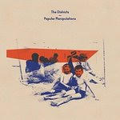

Quick Takes (August 2017)
Welcome to the latest installment of Quick Takes! And what better way to start our latest installment by returning to the sounds of summer just one last time?
It appears that Carl and I mostly avoided the typically merry sounds this season provides in favor of some of the month's most notable rock offerings. Since we've taken a liking to bringing over guests, we've also invited regular staff writer Sean Caldwell to help us out by giving us his take on Tera Melos' singular mix of post-hardcore and progressive rock.
As for everything else, well let's just say we were entrhalled with a good selection of albums with rather bleak themes. But out of the elevent albums we write about this month, Carl and I both agree that Nadine Shah's is the best of these by a good margin, a thoughtful political album that's actually not overwrought. Meanwhile, I was felt compelled by covering the latest unconventional releases by Liars and Naomi Punk. It's safe to say that the most popular releases in here goes to The War on Drugs, and I didn't feel that it lives up to the hype.
What were your favorite albums during the month of August? Anything we didn't get to review on our site that we should've? You can always reach us on facebook, or on our official twitter page. - Juan
...
A Giant Dog
Toy
(Merge)
Despite not being the dominant force it once was, there’s still a number of modern bands that strive to keep the spirit of rock n’ roll alive and well. A Giant Dog have been making a strong case for their straight-ahead guitar assaults for close to a decade now even if a number of their former contemporaries have ceased to exist. That desire to keep going does keep them at bay, though they still find new ways to avoid finding themselves at a stalemate. Toy, their fourth LP, is justifiably snarled, a stagy portrayal of seventies-informed classic rock with a fierce theatrical touch. Most of it barrels down at an uncontrolled pace with their characteristically driving guitars and brittle hooks, all while Sabrina Ellis dramatizes her lines as if auditioning for a modern reboot of the Rocky Horror Picture Show. But Toy is no campy imitation of glam’s golden era, and instead propels forward with forthright confessions that burst with wicked energy. Their lewd punk anthems are messy and sloppy, and even a little bit sticky, but A Giant Dog wouldn’t want it any other way. [7/10] Juan Edgardo Rodríguez
Fangclub
Fangclub
(Vertigo)
Dublin three-piece Fangclub operate with a pretty simple blueprint, and their debut LP brings a present day sensibility to a sound ripped from the more mainstream branches of nineties grunge. Opening track Bullet Head is a two-minute blast of tried and tested power and pace, overdriving a hooking riff and racing through palm-muted verses, and it gives a taste of the red meat that is served for the most part of the record. Lyrically the songs are basic, but the album’s archetype relies almost entirely on the driving force of the heavy riffs, and as a result the tracks are immediate but lack the staying power of a more original motif. This is a band very much in the same ballpark of Dinosaur Pile-Up, or to a slightly lesser extent Nine Black Alps, where the riffs can get a blood-starved palette watering before reaching capacity pretty quickly. It’s a reasonably solid debut that gets about as much as it can out of a fairly limited concept. [5/10] Carl Purvis
Ghostpoet
Dark Days + Canapés
(Play It Again Sam)
Twice Mercury-nominated Obaro Ejimiwe has not yet delivered a record that is orthodox as far as sound and atmosphere are concerned. With Dark Days + Canapes – his fourth LP as Ghostpoet – he has opted for a devastatingly claustrophobic motif that stalks from close-quarter shadows and creates a relentless sense of foreboding. The backdrop is perhaps appropriate for the rueful outlook Ejimiwe has taken towards society, taking aim at the refugee crisis, the prominence of social media and his own personal politics, with his gripes articulated via his weary half sung/half spoke vocal. In fact, he has created such a strong, affecting soundscape that for the most part of the record it is uncomfortable to listen to. Whether that is by design or not, Ejimiwe has administered a macabre marriage of sound and speak that are made for each other. [6/10] Carl Purvis
 Girl Ray
Girl Ray
Earl Grey
(Moshi Moshi)
Girl Ray’s ingeniously titled debut record is a impressively confident effort marooned in the ramshackle of 60s and 70s pop rock. The London three-piece are delightfully British, with frontwoman Sophie Hankin’s falsetto acting as a spotlight illuminating all before it as it floats on the tottering grooves the band are air-locked into. Earl Grey is an album that strikes a charming balance between adolescent simplicity and shrewd writing, and the trio – all still in their teens when this album was recorded – manage to nod to and connect to their obvious influences all whilst creating a real, impish identity of their own. There are areas of the record where moments become a bit looser and less infectious, but generally this is a strong debut. Its range is ambitious, too, considering where it drops its anchor, and there’s no better example of that ambition – and the confidence to put it into practice – than the thirteen-minute, shapeshifting title track that keystones Earl Grey the album. [7/10] Carl Purvis
 Nadine Shah
Nadine Shah
Holiday Destination
(1965 Records Ltd.)
Holiday Destination was another record to drop in August that, for the most part, is captivatingly bleak in its themes. Nadine Shah focuses her aperture on toxic politicians, the refugee crisis and anti-immigration rhetoric by means of a ruminating brand of post-punk. Lyrically, Shah is on top form. Powerful, succinct statements resonate throughout the record, particularly in the album’s title track, the bloodshot Evil and with the delectably spiky 2016. Her ability to strike with such accuracy with her wordplay is indicative of the unsettling precision of her arrangements, where perfectly timed hairpins and chicanes keep the listener on a lengthy tether. The songs aren’t always immediate but they simmer deliciously, slow cooking into immensely strong arrangements where darting flashes of instruments sharpen the focus. Holiday Destination is Shah’s third LP, and is her most accomplished effort to date – superbly executed with an ability to make an austere backdrop insatiably compelling. [8/10 – Believe The Hype] Carl Purvis
 Naomi Punk
Naomi Punk
Yellow
(Captured Tracks)
Yellow is the worst album of the year. Now, does that mean anything considering Naomi Punk approach their grinding 75-minute opus with an outwardly apathetic countenance? In all fairness, the Olympia-based trio have faithfully stuck to writing challenging sludge-rock suites with nothing more than a noncommittal shrug since 2012’s ironically-titled The Feeling. So maybe they’re not the most charismatic bunch, but that’s not to say that they shouldn’t be admired for their free-form experimentation. Yellow does convey many fragmented ideas as if they’re sprinkling their discolored morass of repetitive grunge riffs with a smattering of jerry-built sonic trinkets. They have taken a lot of consideration into breaking any formal structure with layers of syncopated countermelodies. But it also goes on and on for too damn long, and there’s not a moment in Yellow where leaving or removing its recurring elements would make a noticeable difference. The pernicious ambiance that Naomi Punk creates is occasionally captivating, but unbearably onerous when taken as a whole. [5/10] Juan Edgardo Rodríguez
Liars
TFCF
(Mute)
Band changes can be either reaffirming or superfluous. In the case of Liars, it feels like an abrupt and unwelcome departure. The art-rock project, now led by sole member Angus Andrew, seemed to have gone through minimal trials even when they always excelled at sounding abstruse and cold-hearted on the surface. For Andrew to take it to his own devices on Liars’ latest, TFCF, dramatically changes the name’s dynamic, given that the absence of close band member Aaron Hemphill is deeply felt. Andrew doesn’t just explore creative isolation, he embodies it on every level, cobbling together a mishmash of ideas that barely cohere into actual songs. Andrew does flesh out these forbidding electronic fragments as he scrutinizes his own existence. His arrangements may be skeletal but his creativity hasn’t abated, adhering to his own limitations and miraculously seaming all these pieces together into a beautiful chaos. TFCF is riddled with confusion and self-reflection, and it faithfully continues Liars’ unconventional stride, though this time it had to affect him intimately and personally to take him there. [7/10] Juan Edgardo Rodríguez
 Soccer Mommy
Soccer Mommy
Collection
(Fat Possum)
If you’re a regular reader of Quick Takes, you’ll know I have a serious soft spot for a bedroom pop-rocker – usually with a female vocal – who drops a record where they’ve found that evolutionary medium between the bedroom and the studio. Sophie Allison is at just that stage. Collection is a record of six re-worked Bandcamp songs and two new tunes, and it is an accomplished presentation of her songwriting ability. The upgrade to a full band has given Allison’s tracks a sharper, more incisive vehicle to convey her confidentialities across without losing any of the intimacies of her delicate, anguished and spirited vocal tone. It’s easy to make comparisons to Melina Duterte – aka Jay Som – and although Allison hasn’t quite got as much as Duterte did out of her band to give her songs maximum affecting power, Collection is a strong erm… collection of cosy tracks that maintain the kind of candid inwardness that can sometimes be lost between the bedroom and the studio. [7/10] Carl Purvis
 Tera Melos
Tera Melos
Trash Generator
(Sargent House)
Merging oddball complexity with some level of verse-chorus-verse convention, Tera Melos has broken a four-year hiatus with their new album, Trash Generator, a warped collection of pop-length rock songs infused with the band’s often academic and absurdist musical vocabulary. Picking up where they left off with 2013’s X’ed Out, the three-piece stretch itself yet again, zipping through wildly composed and tangent-riddled jams (Warpless Run), incorporating metal-inspired blast beats into their time signatures (Dyer Ln), or experimenting with amusing robotic-weirdness (A Universal Gonk). While a heavy portion of Trash Generator is comprised of the band’s signature noodling and shifts, songs like Your Friends, the title track and Men’s Shirt have enough of a basic structure in place that added embellishments never sound gratuitous or boastful. Certainly, Tera Melos pursue every available space in each song with an endless and strangely conceived scaffold of ideas to ascend, but it’s never an exhausting exercise. [8/10] Sean Caldwell
The Districts
Popular Manipulations
(Fat Possum)
Open-hearted indie rock makes a comeback on Popular Manipulations. The Districts reach for an emotional payoff on their third effort, but not without thinking things through, undergoing a surprising evolution that relates to their growth as musicians. It’s a progression that naturally suits them, a significant stepping stone given that 2015’s A Flourish and a Spell bristled with a vitality that was equal parts exuberant and amateurish. The Pennsylvania rock band were still figuring out the band they wanted to become, and judging by their sometimes callow observations, it appears they’re not trying to grow up too fast. Themes of alienation and heartbreak are set against sweeping guitar hooks, handled with a well-studied attention to craft that takes cues from bands like Wolf Parade and Modest Mouse. A wise template to base their potent anthems on, though they project more broadly when they step away from their sources of inspiration. Their hope soars when they sing about what they know. [7/10] Juan Edgardo Rodríguez
 The War on Drugs
The War on Drugs
A Deeper Understanding
(Atlantic)
Adam Granduciel should take all the credit in the world for neutralizing the canonical distinction between college and classic rock. He’s a music fan first, a studio perfectionist who prioritizes on creating a true album experience without having to clearly define any musical movement. But that’s not to say that heartland rock is the foundation that holds everything together, and on A Deeper Understanding, his bias is more firmly in place. Some of the hazy ambiance found on past records Lost in a Dream and Slave Ambient is replaced with pearly, new wave-inspired keyboards, which does tend to sanitize his songwriting prowess rather than take it into any new sonic territory. What you see is pretty much what you get with A Deeper Understanding: impeccably-produced songs about aging and disillusionment imbued with an air of nostalgia. So it’s quite easy to read without having heard a single word - his lack of nuance from a lyrical standpoint is startling, to the point where it confuses one into thinking that it’s profound since everything else is so carefully considered. It comes from a genuine place, sure, but his overly labored Reagan-era balladry rekindles a musical period that still sounds entirely dated. This newfound ease of songcraft does elevate Granduciel into the upper echelons of modern rock royalty, but as it is with many legends who got too comfortable with themselves after heading in a more accessible direction, the road ahead feels rather uncertain. [6/10] Juan Edgardo Rodríguez
25 September, 2017 - 04:40 — No Ripcord Staff